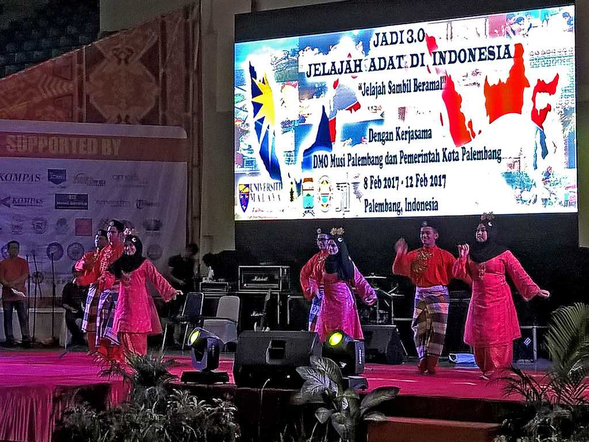
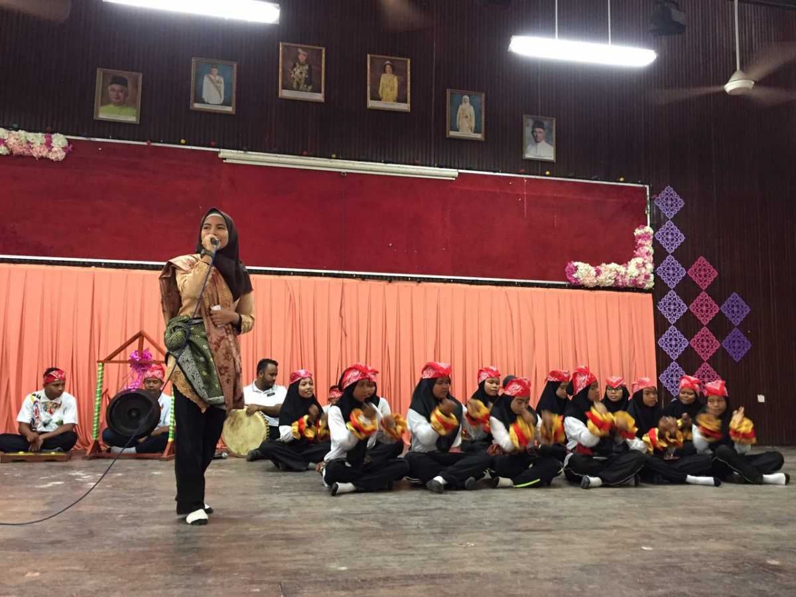

The dances of Malaysia are splendid and awe strikingly expressive. With colourful costumes, measured movements and mesmerising music, all dances have a story to tell.
Joget is a traditional Malay dance that originated in Malacca in the colonial era.

Upbeat and expressive, zapin is one of the most popular dance and musical forms in traditional Malay performing arts.

Dikir Barat’s origin is from the northern state of Malaysia, Kelantan and the borderlands of southern Thailand with Kelantan.